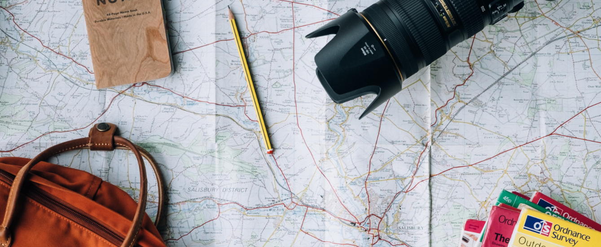
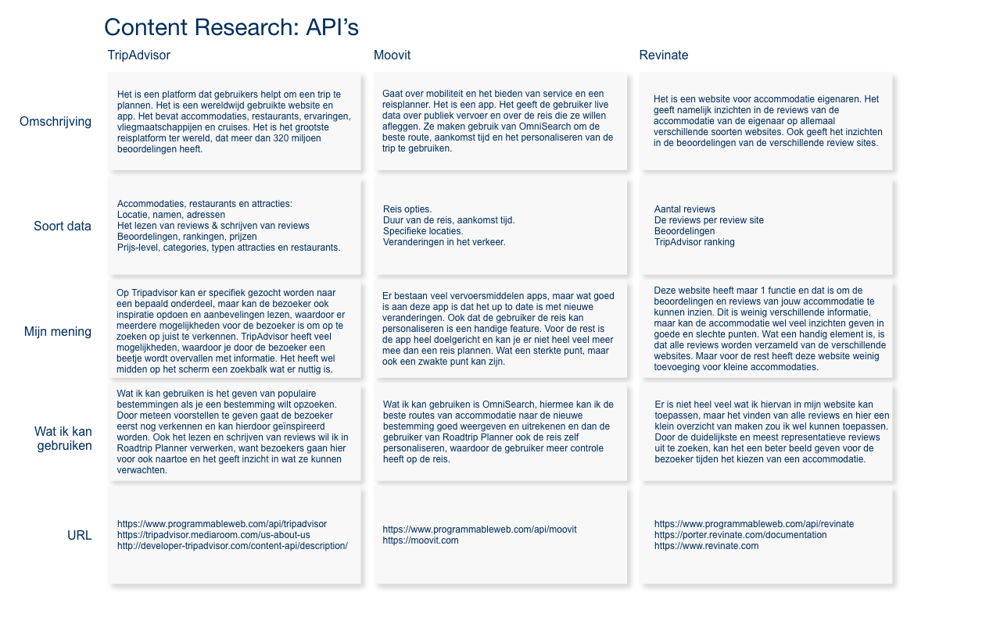
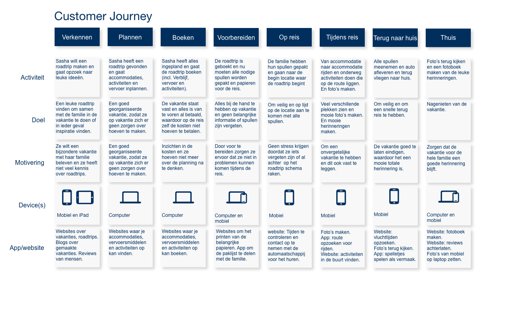
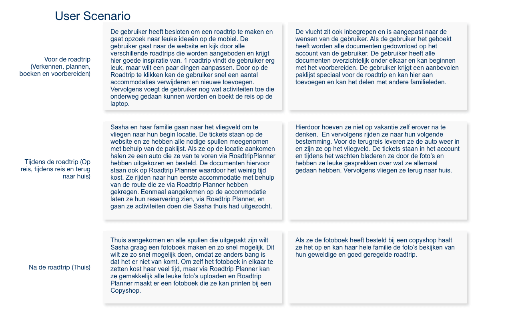

Sport Safe Bracelet
De opdracht
De opdracht was om een multi-device website te ontwerpen voor op reis.
Ik wist al meteen dat ik een website wilde maken die helpt met het maken en ondersteunen van een Road Trip. Hiervoor heb ik onderzoek gedaan naar API’s, een Customer Journey Map gemaakt, User Scenario gebruikt en ben ik veel bezig geweest met het testen van prototypes.
Jaar
2020-2021
Diensten
UX design
UI design
Web design
Mijn rol
Perfect Road Trip was een individueel project, waarbij ik onderzoek heb gedaan, het concept bedacht en het concept getest.
Perfect Road Trip
Perfect Road Trip is de website waar mensen een Road Trip kunnen kiezen of samenstellen en handige functies heeft voor tijdens de Road Trip, waardoor de beleving van de reis gemakkelijker wordt. Als de gebruiker op zijn of haar mobiel aan het zoeken is naar inspiratie laat Perfect Road Trip verschillende opties zien die gepersonaliseerd kunnen worden.
Als de gebruiker een Road Trip heeft uitgekozen kan de gebruiker beginnen met voorbereiden. Perfect Road Trip heeft een Paklijst-functie die geordend is met een selecteer-systeem.
Ook kan de gebruiker een overzicht zien met de locaties en het vervoer naar de locaties. De tickets en papieren kan de gebruiker gemakkelijk uploaden, waardoor de gebruiker tijdens de roadtrip snel de documenten terug kan vinden.
Wanneer de gebruiker terugkomt van de Road Trip is er een optie om een fotoboek te maken. Hierbij hoeft de gebruiker alleen een fotoboek te selecteren, de leuke foto’s te uploaden en te betalen. Perfect Road Trip is de ideale ondersteuning voor de Road trip plannen.
Het proces
Content Research
Ik ben begonnen met onderzoek doen. Hiervoor had ik een aantal API’s (Application Programming Interfaces) onderzocht: TripAdvisor, Moovit en Revinate. Ik heb onderzocht wat voor soort date ze gebruiken en of ik deze data kan gebruiken in mijn product.
Customer Journey Mapping
Om inzicht te krijgen in hoe een Road Trip wordt beleefd, heb ik een Customer Journey Gemaakt. Hiervoor heb ik een aantal mensen ondervraagd die op een Grote Reis zijn geweest en hoe het stap-voor-stap in elkaar zat. Met behulp van de Customer Journey Map heb ik inzichten gekregen hoe de vakantie eruit ziet, vanaf verkennen tot terugkomt en welke apparaten ze hiervoor gebruiken.
User Scenario
Om te kijken hoe een gebruiker door het concept zou moeten lopen heb ik een User Scenario gemaakt. De User Scenario geeft inzicht in wat er belangrijk is voor de gebruiker. De Scenario is opgedeeld in 3 periodes, namelijk: voor de Road Trip, tijdens de Road Trip en na de Road Trip.
Prototypen
In de opvolgende weken had ik een prototype gemaakt en ging ik die testen bij verschillende mensen om te kijken wat er aangepast moest worden. De belangrijkste feedback is onderverdeeld in verschillende categorieën: Multi-Device Experience, geloofwaardigheid en het ontwerp.